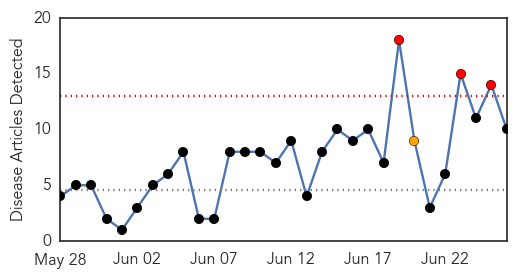
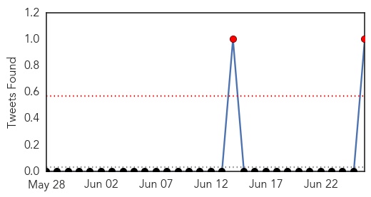
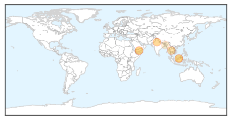
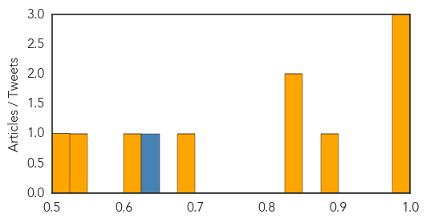

Toggle navigation
Early Warning
Daily Alerts
Dengue Fever
Jun 26, 2015
Compare to:
-
Hemmorhagic Fever
Mold/Fungal Infection
Influenza
Meningitis
Pertussis / Whooping Cough
Middle East Respiratory Syndrome
Cholera
Hepatitis
Chikungunya
Yellow Fever
Bubonic Plague
West Nile Virus
Swine Flu
Ebola
Measles
Unknown
Mumps
30 Day Trends
Web: 3
alerts
, 1
warnings
Twitter: 3
alerts
, 0
warnings
Top Articles:
0.995
Dengue cases in Malaysia
0.985
Over 8,000 Yemenis stricken with dengue fever
0.983
NGO's Plans to Fight Dengue in Border Refugee Camps
0.886
Water tank removed
0.830
States directed to act to prevent dengue
0.829
States directed to act to prevent dengue
0.676
New, more fatal dengue strain leaves Malaysian Health Ministry searching for answers
0.624
Yemen UN releases emergency funding for relief efforts in crisis-torn country
0.541
Impact of climate change on diseases in rural and urban Bangladesh
0.521
Nadda directs health officials to gear up for monsoon
Top Tweets:
0.822
Flavivirus news: Dengue fever cases continue to rise - Myanmar Times: Dengue fever cases contin... http://t.co/CGUwNdS0wr pathogenposse
Web/News Articles

Tweets

Article Locations

Article Confidences
